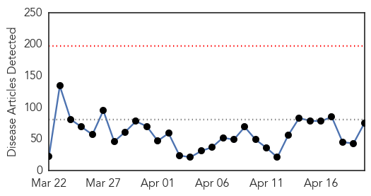
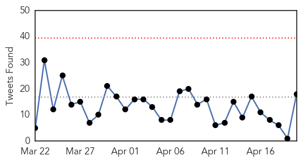

30 Day Trends
Web: 0 alerts, 0 warnings
Twitter: 0 alerts, 0 warnings
Top Articles:
- 1.000
- 6 months after negative blood test, Ebola virus found in a survivor's semen sample
- 1.000
- Ebola Lying in Wait
- 1.000
- Boots on the Ground: CDC's Disease Detective Conference
- 1.000
- CDC Ebola guidance reflects concern over spread via sex
- 0.999
- Canada's Efforts Making A Difference In The Fight Against Ebola
- 0.999
- Canada's Efforts Making a Difference in the Fight Against Ebola -- OTTAWA, April 20, 2015
- 0.999
- an interview with Dr Katie Geary, International SOS
- 0.999
- healthcare asia – medical and healthcare news in asia
- 0.999
- Health Officials Issue New Guidelines on Sexually Transmitted Ebola
- 0.999
- Road to Redemption: How One Liberian Hospital is Recovering from Ebola
- 0.998
- WHO issues 'safe sex warning' to Ebola survivors
- 0.998
- Next steps for Australia's Ebola response, Media release, 20 Apr 2015, Australian Minister for Foreign Affairs, The Hon Julie Bishop MP
- 0.997
- Health Alert: Ebola returns to Guinea
- 0.997
- CDC warns of sexual transmission of virus as WHO admits to failings
- 0.996
- 'Exhausted' Liberia struggles with long Ebola 'to do' list
- 0.995
- Ebola Survivors Urged To Practice Safe Sex
- 0.991
- WHO admitted serious failings in its handling of the Ebola crisis
- 0.991
- As Ebola Cases Dwindle, West Africa Turns To Economic Recovery
- 0.990
- The American Response to Ebola
- 0.989
- Rebuilding Liberia As Ebola Cases Decline
- 0.986
- To Help Liberia, Guinea And Sierra Leone Recover From Ebola Emergency: World Bank Group To ProvideUS$650M
- 0.982
- Opposition protests slow down anti-Ebola war in Guinea
- 0.981
- Military did as asked on Ebola
- 0.980
- Opposition protests slow down anti-Ebola war in Guinea - Xinhua
- 0.979
- Nigerian govt. says Ondo strange disease under control, blames “methanol poisoning”
- 0.975
- Ebola: my return to Sierra Leone
- 0.971
- Mysterious disease kills Nigerian patients within a day
- 0.968
- Ebola virus: World Health Organisation admits failings in handling of crisis, promises reform
- 0.966
- Ondo mysterious deaths linked to Ethanol poison
- 0.963
- WHO denies making statement on Ondo mysterious deaths
- 0.962
- As Others See It: Rebuilding in Africa after Ebola
- 0.958
- With no fear, this Goan doctor treated Ebola patients in Sierra Leone
- 0.944
- Sierra Leone braces for a whole new crisis as ebola dwindles « Awoko Newspaper
- 0.937
- Mysterious Disease In Irele Not Contagious – Ondo Govt
- 0.928
- WHO admits failings over Ebola - Africa
- 0.925
- The Deadliest Disease in the World Kills 160 People Every Day
- 0.923
- W.H.O. Promises Reform After Criticism Over Ebola Response
- 0.922
- Salone fails to meet MRU zero ebola deadline « Awoko Newspaper
- 0.911
- Sierra Leone News : Days 4 & 5 of Sierra Leone Presidents 6-day Visit to Washington D.C.: Sierra Leone News
- 0.906
- 'Local Gin' Suspected of Causing 18 Mystery Nigeria Deaths — Naharnet
- 0.905
- Mystery illness kills 18 in Nigeria
- 0.901
- Canadian Armed Forces medical team will continue work with British forces to address the Ebola epidemic in Sierra Leone
- 0.900
- Strange disease in Ondo
- 0.893
- Australia to recoup $7.5m in foreign aid by closing Sierra Leone Ebola clinic
- 0.892
- Afram Plains Health Director expresses fear for residents
- 0.891
- MRU leaders at World Bank
- 0.888
- Weedkiller likely cause of Nigeria disease
- 0.887
- Ebola, healthcare investment and plan for West African Prosperity Network
- 0.875
- One week into ebola vaccine trial…500 people volunteer so far « Awoko Newspaper
- 0.844
- ‘ETU Workers’ Demonstration Forces MSF to Postpone Handing over Ceremony
Showing top 50 articles...
Top Tweets:
- 0.988
- Ondo Disease: Mysterious Nigeria Epidemic Not Ebola, Likely Pesticide ... - International Business Times http://t.co/7EwAT5gM3a ebola EVD
- 0.982
- EIS Officers Present Findings on Ebola, MERS and More at CDC's Disease ... - Infection Control Today http://t.co/6fJOSlSI9q ebola EVD
- 0.981
- NEW: Understanding the Emergence of Ebola Virus Disease in Sierra Leone http://t.co/WOy5ccWw1f Ebola
- 0.955
- NPR NEWS EBOLA OUTBREAK COVERAGE RECEIVES 2014 PEABODY ... - NPR http://t.co/uV9FxS8Irw ebola EVD
- 0.952
- Ebola outbreak: we simply could not cope, admits World Health Organisation - The Guardian http://t.co/utra04qVZY ebola EVD
- 0.934
- WHO Has Acknowledged the Failings of Its Ebola Crisis Response - TIME http://t.co/V0lpIKl0Sp ebola EVD
- 0.922
- As Others See It: Rebuilding in Africa after Ebola - Pittsburgh Post-Gazette http://t.co/8N4xezUQYH ebola EVD
- 0.915
- Attorneys for Ebola nurse Nina Pham, Texas Health Resources face off in court ... - Dallas Morning... http://t.co/RAoFc38e1j ebola EVD
- 0.915
- Attorneys for Ebola nurse Nina Pham, Texas Health Resources face off in court ... - Dallas Morning... http://t.co/0IAvHS9aLJ ebola EVD
- 0.882
- The American Response to Ebola - New York Times http://t.co/bwlj7E9uJm ebola EVD
- 0.856
- EIS Officers Present Findings on Ebola, MERS and More at CDC's Disease ... - Infection Control Today http://t.co/pfqBDTyPXV
- 0.852
- News pouch avianflu avianinfluenza Ebola EbolaResponse MERS http://t.co/ot0Rb1CiMl
- 0.851
- Ondo Disease: Mysterious Nigeria Epidemic Not Ebola, Likely Pesticide ... - International Business Times http://t.co/33YRlLDAoK
- 0.833
- RT: The number of Ebola cases in West Africa is declining - but there’s still lots more work to gettozero http://t.co/YQXGyjd13n
- 0.791
- Signs Ebola Spreads in Sex Prompt a CDC Warning - New York Times http://t.co/GYoE0eEhp3 ebola EVD
- 0.780
- Ebola Lying in Wait - New York Times http://t.co/7R0Fo55PsR ebola EVD
- 0.765
- .@WHO on why there are no Ebola therapies: Market-based systems do not deliver on commodities for neglected diseases – endemic nor epidemic
- 0.756
- Aujourd’hui marque le début du concours de chant Africa Stop Ebola en Guinée ! Inscrivez-vous du 20 avril au 6... http://t.co/nZMHe9ZuIk
- 0.756
- Aujourd’hui marque le début du concours de chant Africa Stop Ebola en Guinée ! Inscrivez-vous du 20 avril au 6... http://t.co/kzKQd75ZqE
- 0.756
- Aujourd’hui marque le début du concours de chant Africa Stop Ebola en Guinée ! Inscrivez-vous du 20 avril au 6... http://t.co/5QdUXoPm4i
- 0.742
- RT: If we want to prevent the next epidemic, we must learn from Ebola. Good to see Ebola reporting recognized by Pulitzer …
- 0.732
- Returning to Normal: The Road to Early Recovery From Ebola Starts With the ... - Infection Control Today http://t.co/5lBCVqCpvj ebola EVD
- 0.719
- As Ebola Cases Dwindle, West Africa Turns To Economic Recovery http://t.co/f2dOvteY6T Via:
- 0.679
- The Ministry of Health in Liberia has received a $25K boost of medical supplies to enhance its post-Ebola functions: http://t.co/r0cnoi9bZk
- 0.669
- Algorithmes, données sociales et erreurs des modèles de prévision de menace : le cas d’Ebola http://t.co/ElANR2vZd1
- 0.666
- If we want to prevent the next epidemic, we must learn from Ebola. Good to see Ebola reporting recognized by Pulitzer http://t.co/LPLMVfoZML
- 0.623
- Health Officials Warn Ebola Survivors Against Having Sex After Virus Found in Found in sperm http://t.co/DCfVWmebRM via
- 0.612
- Ebola : des traces du virus retrouvées dans le sperme 6 mois après la guérison http://t.co/u5kSZcgES7 via
- 0.600
- Journey across Ebola-scarred Liberia http://t.co/wfsPcDarU3
- 0.568
- Apes lack Ebola protection, scientists warn - http://t.co/oXbQeldPQA http://t.co/lnAJ1Jk6Ye ebola EVD
- 0.567
- RT: The fight against Ebola is not over. Our latest story on the work of medical detectives in West Africa. outbreaks. http:…
- 0.526
- RT: CIDRAP: US, African agreement formalizes creation of African CDC http://t.co/ULPLJ6JK2F Ebola
- 0.511
- Nigeria's successful control of Ebola included finding 888 contact. Just one who avoided rx caused a second cluster and complicated control.
Web/News Articles
Tweets
Article Locations